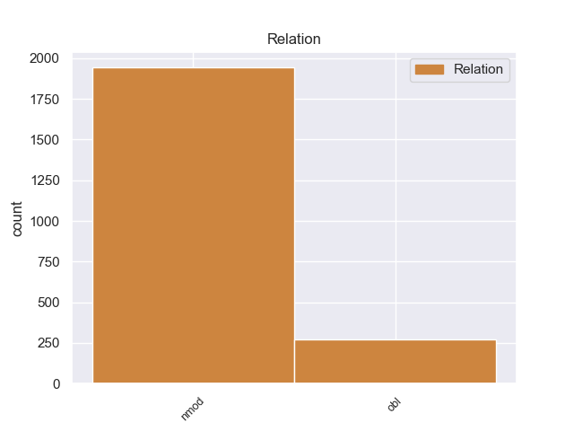
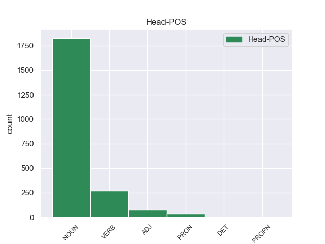
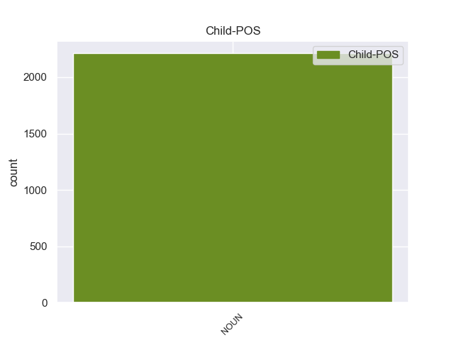

Distribution of features within this leaf



Agreement Rules sorted by frequency.
- When the dependent token is the nominal modifier(nmod) of the head token, and the dependent token is NOUN.
1 Ευελπιστώ _ _ _ _ 0 _ _ _
2 ότι _ _ _ _ 0 _ _ _
3 η _ _ _ _ 0 _ _ _
4 απόφαση _ _ _ _ 0 _ _ _
5 αυτή _ _ _ _ 0 _ _ _
6 , _ _ _ _ 0 _ _ _
7 συμπεριλαμβανομένης συμπεριλαμβανομένηo ADJ _ Gender=Fem|Number=Sing|VerbForm=Part 0 _ _ _
8 και _ _ _ _ 0 _ _ _
9 της _ _ _ _ 0 _ _ _
10 αιτιολογικής _ _ _ _ 0 _ _ _
11 έκθεσης έκθεσης NOUN _ Gender=Fem|Number=Sing 7 nmod _ _
12 που _ _ _ _ 0 _ _ _
13 την _ _ _ _ 0 _ _ _
14 συνοδεύει _ _ _ _ 0 _ _ _
15 , _ _ _ _ 0 _ _ _
16 θα _ _ _ _ 0 _ _ _
17 διαβιβαστεί _ _ _ _ 0 _ _ _
18 σ _ _ _ _ 0 _ _ _
19 τις _ _ _ _ 0 _ _ _
20 γαλλικές _ _ _ _ 0 _ _ _
21 αρχές _ _ _ _ 0 _ _ _
22 , _ _ _ _ 0 _ _ _
23 εφόσον _ _ _ _ 0 _ _ _
24 υπερψηφιστεί _ _ _ _ 0 _ _ _
25 από _ _ _ _ 0 _ _ _
26 το _ _ _ _ 0 _ _ _
27 Κοινοβούλιο _ _ _ _ 0 _ _ _
28 . _ _ _ _ 0 _ _ _
1 Πρώην _ _ _ _ 0 _ _ _
2 Υπουργός _ _ _ _ 0 _ _ _
3 της _ _ _ _ 0 _ _ _
4 Κυβέρνησης _ _ _ _ 0 _ _ _
5 του _ _ _ _ 0 _ _ _
6 Χοσέ _ _ _ _ 0 _ _ _
7 Μαρία _ _ _ _ 0 _ _ _
8 Αθνάρ _ _ _ _ 0 _ _ _
9 , _ _ _ _ 0 _ _ _
10 σ _ _ _ _ 0 _ _ _
11 την _ _ _ _ 0 _ _ _
12 Ισπανία _ _ _ _ 0 _ _ _
13 , _ _ _ _ 0 _ _ _
14 καταδικάστηκε καταδικάστηr VERB _ Gender=Masc|Number=Sing|Tense=Past|VerbForm=Part 0 _ _ _
15 σε _ _ _ _ 0 _ _ _
16 έξι _ _ _ _ 0 _ _ _
17 έτη _ _ _ _ 0 _ _ _
18 κάθειρξης _ _ _ _ 0 _ _ _
19 για _ _ _ _ 0 _ _ _
20 ένα _ _ _ _ 0 _ _ _
21 πολύ _ _ _ _ 0 _ _ _
22 μεγάλο _ _ _ _ 0 _ _ _
23 σκάνδαλο σκάνδαλο NOUN _ Gender=Masc|Number=Sing 14 obl _ _
24 διαφθοράς _ _ _ _ 0 _ _ _
25 . _ _ _ _ 0 _ _ _
Disagree Examples:
1 Brickell _ _ _ _ 0 _ _ _
2 también _ _ _ _ 0 _ _ _
3 diseñó _ _ _ _ 0 _ _ _
4 Brickell _ _ _ _ 0 _ _ _
5 Hammock _ _ _ _ 0 _ _ _
6 y _ _ _ _ 0 _ _ _
7 su _ _ _ _ 0 _ _ _
8 avenida _ _ _ _ 0 _ _ _
9 como _ _ _ _ 0 _ _ _
10 un _ _ _ _ 0 _ _ _
11 centro centro NOUN _ Gender=Masc|Number=Sing 0 _ _ _
12 de _ _ _ _ 0 _ _ _
13 mansiones mansión NOUN _ Gender=Fem|Number=Plur 11 nmod _ _
14 y _ _ _ _ 0 _ _ _
15 de _ _ _ _ 0 _ _ _
16 lujosas _ _ _ _ 0 _ _ _
17 casas _ _ _ _ 0 _ _ _
18 . _ _ _ _ 0 _ _ _
1 A _ _ _ _ 0 _ _ _
2 la _ _ _ _ 0 _ _ _
3 entrada _ _ _ _ 0 _ _ _
4 se _ _ _ _ 0 _ _ _
5 encuentra _ _ _ _ 0 _ _ _
6 una _ _ _ _ 0 _ _ _
7 fuente fuente NOUN _ Gender=Fem|Number=Sing 0 _ _ _
8 de _ _ _ _ 0 _ _ _
9 el _ _ _ _ 0 _ _ _
10 siglo siglo NOUN _ Gender=Masc|Number=Sing 7 nmod _ _
11 XVIII _ _ _ _ 0 _ _ _
12 que _ _ _ _ 0 _ _ _
13 simboliza _ _ _ _ 0 _ _ _
14 a _ _ _ _ 0 _ _ _
15 el _ _ _ _ 0 _ _ _
16 río _ _ _ _ 0 _ _ _
17 Dora _ _ _ _ 0 _ _ _
18 Baltea _ _ _ _ 0 _ _ _
19 desembocando _ _ _ _ 0 _ _ _
20 en _ _ _ _ 0 _ _ _
21 el _ _ _ _ 0 _ _ _
22 Po _ _ _ _ 0 _ _ _
23 , _ _ _ _ 0 _ _ _
24 obra _ _ _ _ 0 _ _ _
25 de _ _ _ _ 0 _ _ _
26 Ignazio _ _ _ _ 0 _ _ _
27 y _ _ _ _ 0 _ _ _
28 Filippo _ _ _ _ 0 _ _ _
29 Collino _ _ _ _ 0 _ _ _
30 . _ _ _ _ 0 _ _ _
1 Digám _ _ _ _ 0 _ _ _
2 os _ _ _ _ 0 _ _ _
3 lo _ _ _ _ 0 _ _ _
4 claramente _ _ _ _ 0 _ _ _
5 , _ _ _ _ 0 _ _ _
6 la _ _ _ _ 0 _ _ _
7 insurgencia _ _ _ _ 0 _ _ _
8 se _ _ _ _ 0 _ _ _
9 ha _ _ _ _ 0 _ _ _
10 pronunciado _ _ _ _ 0 _ _ _
11 mucho _ _ _ _ 0 _ _ _
12 más _ _ _ _ 0 _ _ _
13 claramente _ _ _ _ 0 _ _ _
14 respecto _ _ _ _ 0 _ _ _
15 a _ _ _ _ 0 _ _ _
16 el _ _ _ _ 0 _ _ _
17 tema tema NOUN _ Gender=Masc|Number=Sing 0 _ _ _
18 de _ _ _ _ 0 _ _ _
19 la _ _ _ _ 0 _ _ _
20 paz paz NOUN _ Gender=Fem|Number=Sing 17 nmod _ _
21 que _ _ _ _ 0 _ _ _
22 el _ _ _ _ 0 _ _ _
23 Estado _ _ _ _ 0 _ _ _
24 , _ _ _ _ 0 _ _ _
25 como _ _ _ _ 0 _ _ _
26 lo _ _ _ _ 0 _ _ _
27 demuestra _ _ _ _ 0 _ _ _
28 el _ _ _ _ 0 _ _ _
29 fragmento _ _ _ _ 0 _ _ _
30 que _ _ _ _ 0 _ _ _
31 Bermúdez _ _ _ _ 0 _ _ _
32 cita _ _ _ _ 0 _ _ _
33 de _ _ _ _ 0 _ _ _
34 la _ _ _ _ 0 _ _ _
35 respuesta _ _ _ _ 0 _ _ _
36 de _ _ _ _ 0 _ _ _
37 " _ _ _ _ 0 _ _ _
38 Gabino _ _ _ _ 0 _ _ _
39 " _ _ _ _ 0 _ _ _
40 a _ _ _ _ 0 _ _ _
41 Piedad _ _ _ _ 0 _ _ _
42 Córdoba _ _ _ _ 0 _ _ _
43 , _ _ _ _ 0 _ _ _
44 en _ _ _ _ 0 _ _ _
45 la _ _ _ _ 0 _ _ _
46 cual _ _ _ _ 0 _ _ _
47 no _ _ _ _ 0 _ _ _
48 se _ _ _ _ 0 _ _ _
49 plantea _ _ _ _ 0 _ _ _
50 ni _ _ _ _ 0 _ _ _
51 siquiera _ _ _ _ 0 _ _ _
52 " _ _ _ _ 0 _ _ _
53 esperar _ _ _ _ 0 _ _ _
54 un _ _ _ _ 0 _ _ _
55 mejor _ _ _ _ 0 _ _ _
56 gobierno _ _ _ _ 0 _ _ _
57 " _ _ _ _ 0 _ _ _
58 . _ _ _ _ 0 _ _ _
1 Digám _ _ _ _ 0 _ _ _
2 os _ _ _ _ 0 _ _ _
3 lo _ _ _ _ 0 _ _ _
4 claramente _ _ _ _ 0 _ _ _
5 , _ _ _ _ 0 _ _ _
6 la _ _ _ _ 0 _ _ _
7 insurgencia _ _ _ _ 0 _ _ _
8 se _ _ _ _ 0 _ _ _
9 ha _ _ _ _ 0 _ _ _
10 pronunciado _ _ _ _ 0 _ _ _
11 mucho _ _ _ _ 0 _ _ _
12 más _ _ _ _ 0 _ _ _
13 claramente _ _ _ _ 0 _ _ _
14 respecto _ _ _ _ 0 _ _ _
15 a _ _ _ _ 0 _ _ _
16 el _ _ _ _ 0 _ _ _
17 tema _ _ _ _ 0 _ _ _
18 de _ _ _ _ 0 _ _ _
19 la _ _ _ _ 0 _ _ _
20 paz _ _ _ _ 0 _ _ _
21 que _ _ _ _ 0 _ _ _
22 el _ _ _ _ 0 _ _ _
23 Estado _ _ _ _ 0 _ _ _
24 , _ _ _ _ 0 _ _ _
25 como _ _ _ _ 0 _ _ _
26 lo _ _ _ _ 0 _ _ _
27 demuestra _ _ _ _ 0 _ _ _
28 el _ _ _ _ 0 _ _ _
29 fragmento fragmento NOUN _ Gender=Masc|Number=Sing 0 _ _ _
30 que _ _ _ _ 0 _ _ _
31 Bermúdez _ _ _ _ 0 _ _ _
32 cita _ _ _ _ 0 _ _ _
33 de _ _ _ _ 0 _ _ _
34 la _ _ _ _ 0 _ _ _
35 respuesta respuesta NOUN _ Gender=Fem|Number=Sing 29 nmod _ _
36 de _ _ _ _ 0 _ _ _
37 " _ _ _ _ 0 _ _ _
38 Gabino _ _ _ _ 0 _ _ _
39 " _ _ _ _ 0 _ _ _
40 a _ _ _ _ 0 _ _ _
41 Piedad _ _ _ _ 0 _ _ _
42 Córdoba _ _ _ _ 0 _ _ _
43 , _ _ _ _ 0 _ _ _
44 en _ _ _ _ 0 _ _ _
45 la _ _ _ _ 0 _ _ _
46 cual _ _ _ _ 0 _ _ _
47 no _ _ _ _ 0 _ _ _
48 se _ _ _ _ 0 _ _ _
49 plantea _ _ _ _ 0 _ _ _
50 ni _ _ _ _ 0 _ _ _
51 siquiera _ _ _ _ 0 _ _ _
52 " _ _ _ _ 0 _ _ _
53 esperar _ _ _ _ 0 _ _ _
54 un _ _ _ _ 0 _ _ _
55 mejor _ _ _ _ 0 _ _ _
56 gobierno _ _ _ _ 0 _ _ _
57 " _ _ _ _ 0 _ _ _
58 . _ _ _ _ 0 _ _ _
1 Como _ _ _ _ 0 _ _ _
2 no _ _ _ _ 0 _ _ _
3 existen _ _ _ _ 0 _ _ _
4 asentamientos _ _ _ _ 0 _ _ _
5 permanentes _ _ _ _ 0 _ _ _
6 , _ _ _ _ 0 _ _ _
7 también _ _ _ _ 0 _ _ _
8 es _ _ _ _ 0 _ _ _
9 la _ _ _ _ 0 _ _ _
10 isla isla NOUN _ Gender=Fem|Number=Sing 0 _ _ _
11 deshabitada _ _ _ _ 0 _ _ _
12 mayor _ _ _ _ 0 _ _ _
13 de _ _ _ _ 0 _ _ _
14 el _ _ _ _ 0 _ _ _
15 hemisferio hemisferio NOUN _ Gender=Masc|Number=Sing 10 nmod _ _
16 norte _ _ _ _ 0 _ _ _
17 a _ _ _ _ 0 _ _ _
18 el _ _ _ _ 0 _ _ _
19 sur _ _ _ _ 0 _ _ _
20 de _ _ _ _ 0 _ _ _
21 el _ _ _ _ 0 _ _ _
22 Círculo _ _ _ _ 0 _ _ _
23 Polar _ _ _ _ 0 _ _ _
24 Ártico _ _ _ _ 0 _ _ _
25 . _ _ _ _ 0 _ _ _